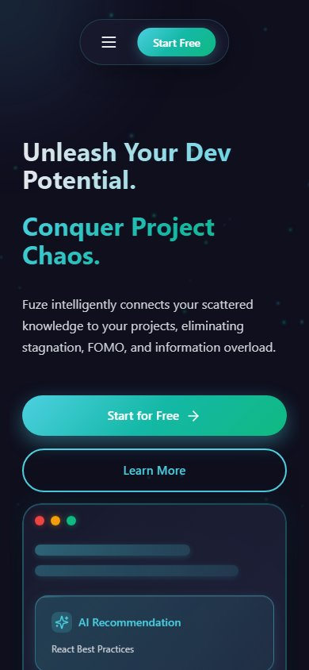

Nexus.
Strike through
the chaos.
An AI-powered content discovery and recommendation platform — shipped as Fuze — that connects scattered developer knowledge to the projects that need it. Semantic search, vector embeddings and ranking pipelines, built for speed.
- Role
- Full-stack developer
- Timeline
- Jan 2026 — Present
- Stack
- Status
- Live · AI search

Information is everywhere.
Relevance is not.
Developers save links, snippets, docs and ideas across a dozen tools. By the time a project starts, none of it is where it needs to be. Nexus began with a simple question: what if the right resource surfaced itself while you were building, instead of waiting in a forgotten bookmark folder?
The answer needed more than a keyword search box. It needed a semantic layer that understands what a resource is about — and a ranking system that can surface it in milliseconds.
A retrieval pipeline
with a point of view.
Semantic search in Postgres
Vector embeddings stored alongside relational data with pgvector, so similarity search stays close to the source of truth instead of adding another service to babysit.
Ranking that earns its place
A ranking pipeline that combines semantic similarity with project context, returning resources that are actually relevant to the work in front of the user.
Flask API, React surface
A clean Flask service layer for ingestion, search and recommendations, paired with a React interface that makes discovery feel like a workspace, not a search engine.
98% less waiting
Redis caching, query optimisation and model tuning reduced backend latency by 98%, bringing the critical request paths under 100ms.
Fast enough to feel
like an instinct.
Search, without
the search bar.
The interface keeps the product close to the work: recommendations sit beside the project, context is visible, and the next useful resource is one action away. Designed to feel calm even when the underlying system is doing a lot.
